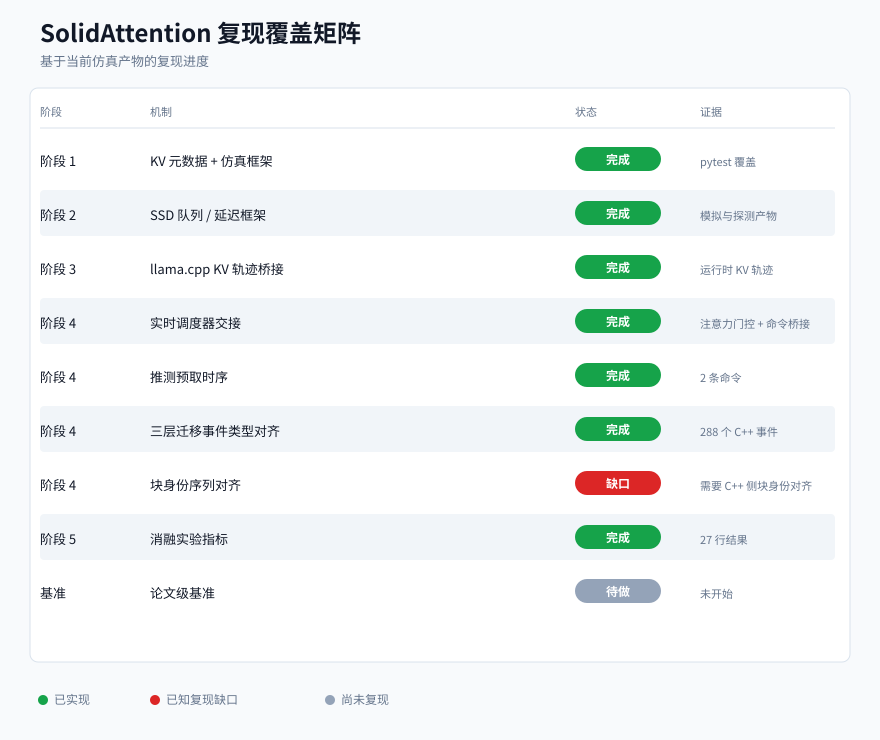
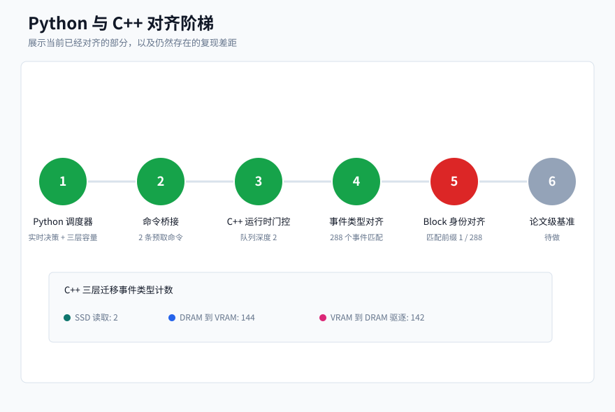
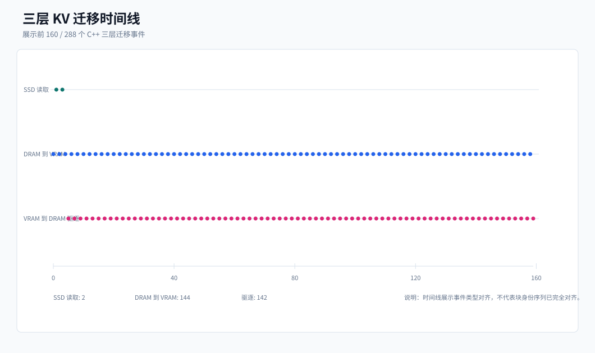
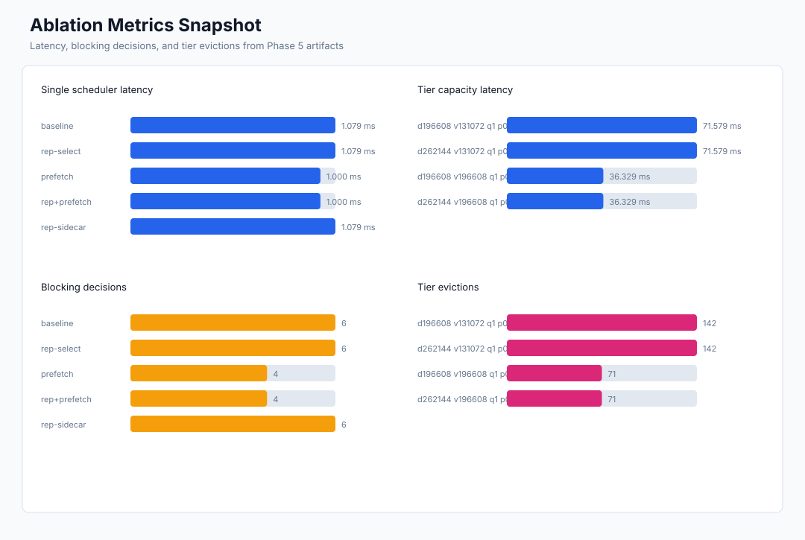

SolidAttention Reproduction Status
Static figures generated from harness trace, parity verification, and ablation metrics artifacts.
Reproduction Coverage Matrix

Python Cpp Parity Ladder

Tier Movement Timeline

Ablation Latency Eviction
